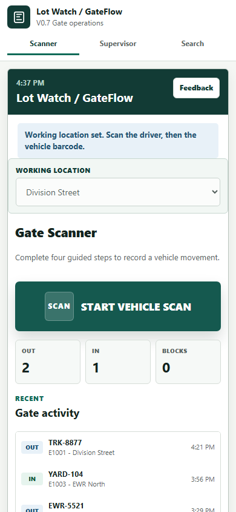
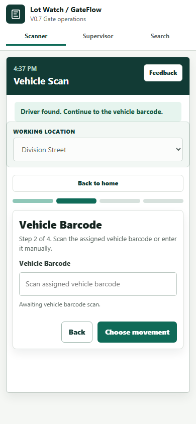
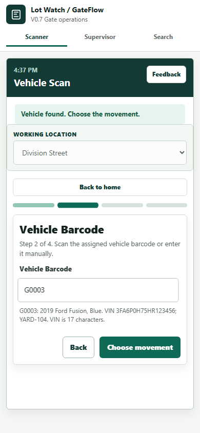
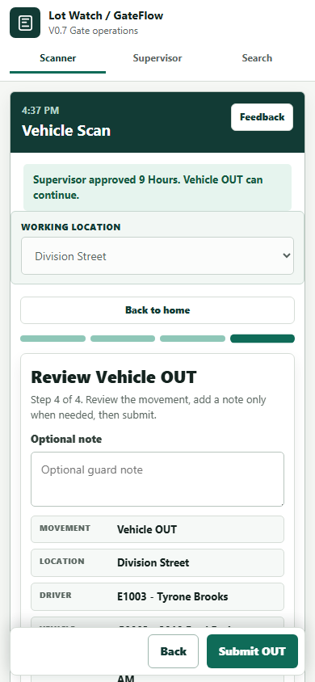
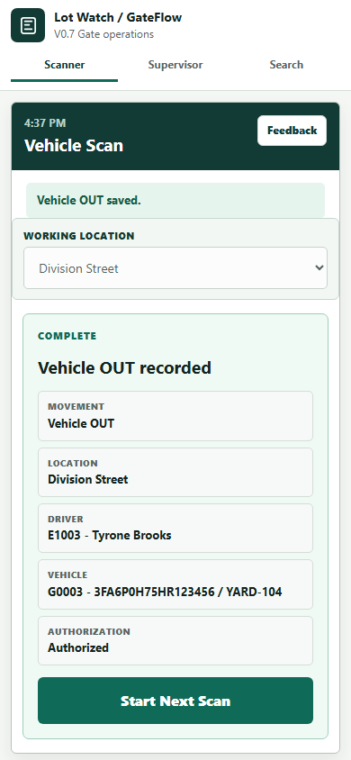

This short walkthrough shows the updated scanner flow, blocked OUT path, 9-hour supervisor approval, and return to review.

The scanner opens on the working location with a simple start action.

Enter or scan the driver as E1003. The old EMP prefix is no longer needed.

After a bad code, correcting to G0003 clears the red warning and confirms the vehicle.
Vehicle OUT is blocked when the driver needs authorization.
Enter S1001 to approve the fixed 9-hour temporary authorization.

After approval, the scan advances to the OUT review screen.

The submitted movement appears in recent activity.